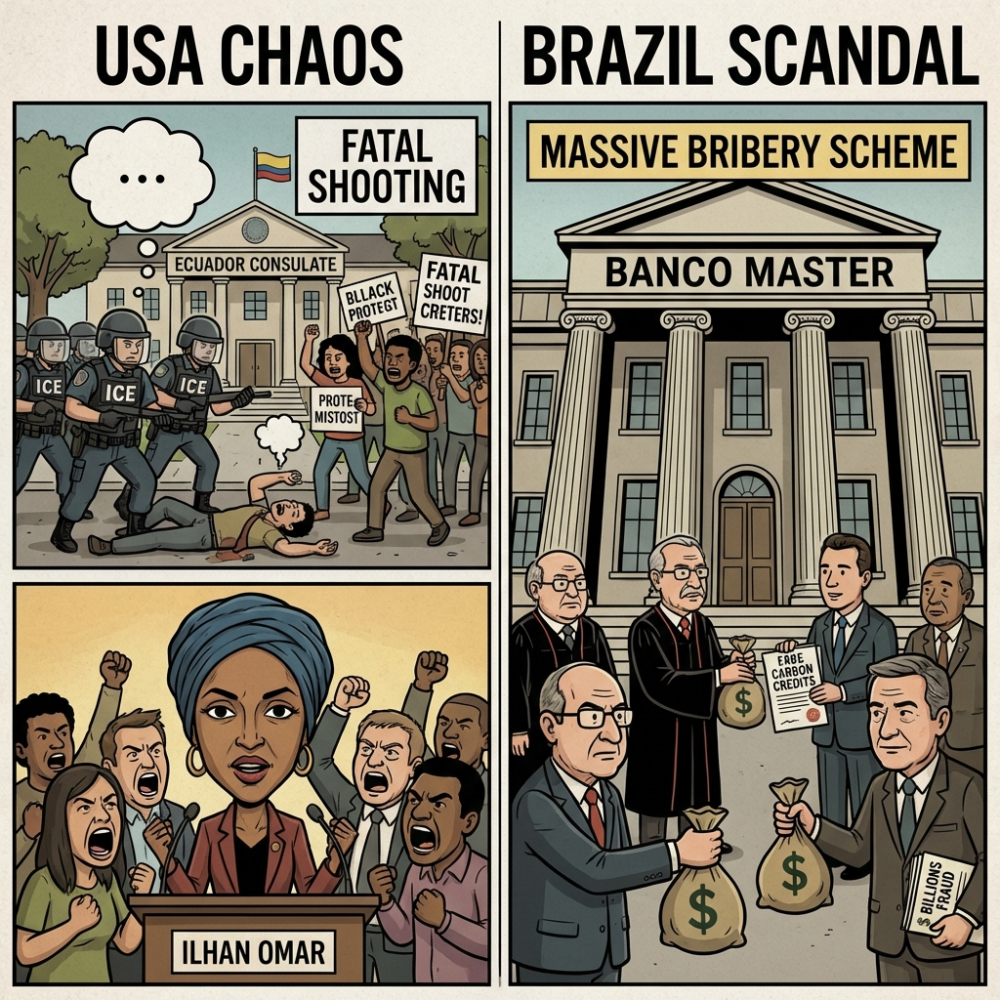

The Daily Globe: ICE Agent Tries to Enter Ecuadorian Consulate in Minneapolis, Fatal Shooting of Alex Pretti by Federal Agents in Minnesota, and Escândalo do Banco Master Revela Corrupção no STF e Governo
Published on 2026-01-29

World
- ICE Agent Tries to Enter Ecuadorian Consulate in Minneapolis
Outrage over ICE aggression violating international law, Ecuador files protest; accusations of foreign interference in protests.
- Selective Outrage Over Immigrant Crimes and Protests
Debates on hypocrisy in media coverage of crimes by undocumented immigrants versus protests against ICE.
- Huda Kattan Backlash for Pro-Regime Iran Video
Beauty mogul criticized by Iranians for sharing video of protesters burning effigies of opposition leaders.
USA
- Fatal Shooting of Alex Pretti by Federal Agents in Minnesota
U.S. citizen killed during ICE operation; agents on leave amid conflicting reports on armament.
- Rep. Ilhan Omar Attacked at Minneapolis Town Hall
Congresswoman assaulted with substance while criticizing DHS; suspect arrested.
- ICE Operations Spark Protests and Resignations in Minneapolis
Escalating clashes over immigration enforcement, federal prosecutors resign in protest.
Brazil
- Escândalo do Banco Master Revela Corrupção no STF e Governo
Fraudes de R$47 bi no FGC, repasses a familiares de ministros como Alexandre de Moraes e Lewandowski.
- Fraudes com Créditos de Carbono Fictícios no Banco Master
Ativos inflados com créditos de carbono sem lastro real, envolvendo terras públicas.
- Revelações de Fraudes Financeiras Sacodem o Brasil
Escândalo expõe sistema de corrupção com ativos fictícios circulando em bancos e fundos.
Topic Index
- immigration-crises
- ice-protests
- diplomatic-incident
- selective-outrage
- iran-regime-support
- federal-shooting
- political-violence
- election-raid